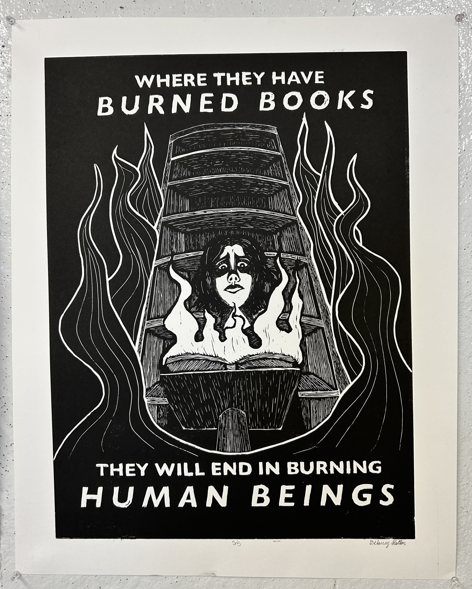
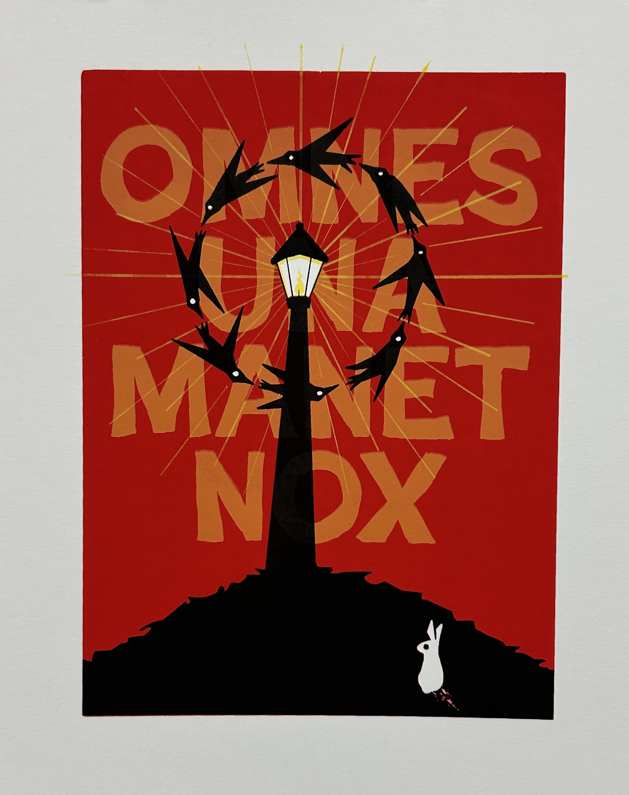
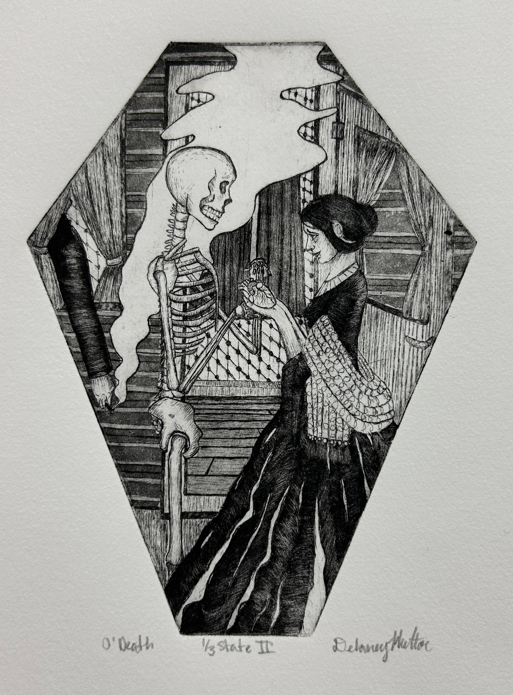
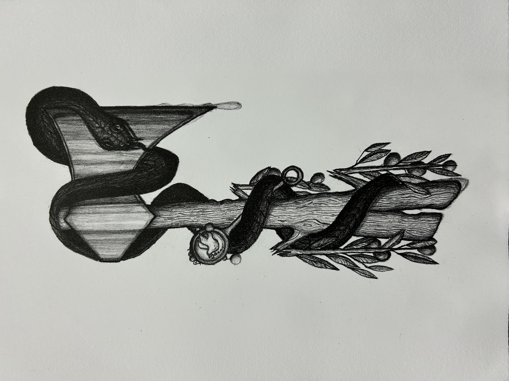
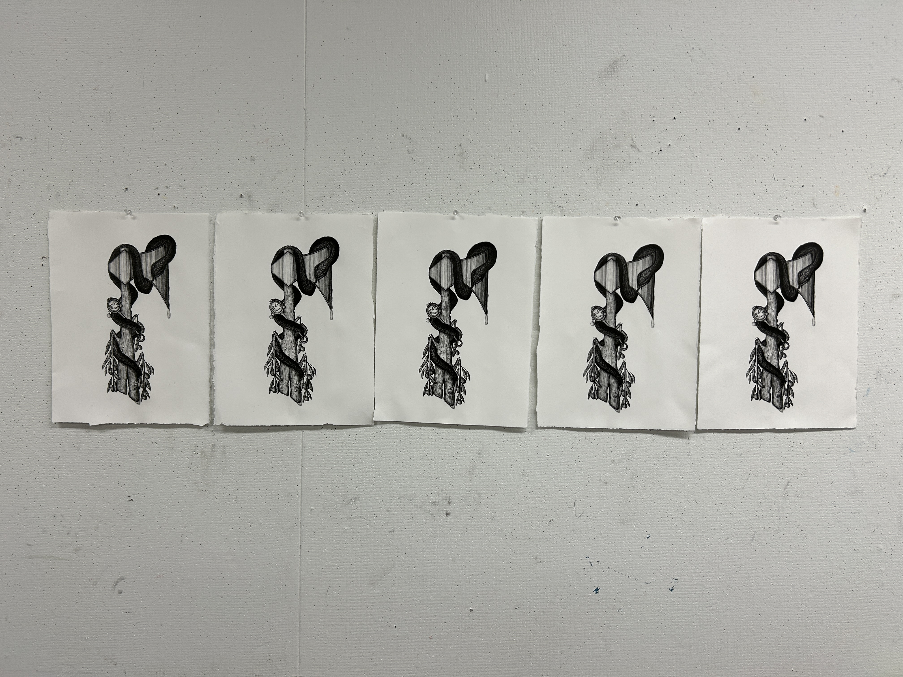

These are a set of 4 projects that I did for my Introduction to Printmaking class with Professor Johanna Paas. In this class, I did four different processes, including linoleum, intaligo, silkscreen, and lithography. For my linoleum project, I focused on book banning/burning, a prominent social issue, and chose to work with shadow and negative space to emphasis the central figure. My intaligo piece is based off the poem Because I could not stop for death by Emily Dickinson, and in the piece I show a woman handing her heart over to a skeleton (death) outside of a carriage. Sitting inside the carriage is Time, and he has his hand dangling out the window holding a cigarette. For this piece I cut the copper plate into the shape of a coffin, and did two states, one including aquatint and one without. The third project is silkscreen, focusing on opposites. In mine, you can see black crows with white eyes circling a street lamp giving off light, being watched by a white rabbit with a black eye farther down the hill. I used red for the background to enhance the ominous feeling, and the Latin text in the back reads “One night awaits us all.” My final piece, the lithography, was based off a story from Aesops Fables called The Laborer and the Snake. I illustrated the story by showing the snake with its tail cut off wrapped around the axe, and holding a baby rattle. Growing from the axe and broken olive branches, and the middle of the handle splits into two, showing the broken peace and rift between Laborer and Snake.